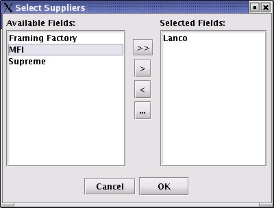
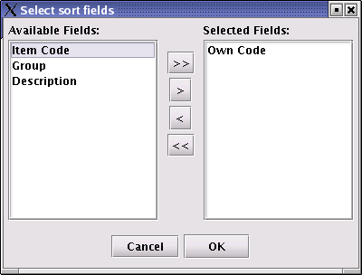

Materials
There is a seperate window for each of the different material types. All the windows are found under the Materials menu.
1. Add new materials
The itemcode and owncode of all the materials must be unique. If an owncode is not supplied, one will automatically be generated.
It is assumed that the same material item can be supplied by different suppliers. When adding new material items, start by first entering the basic information of the new material item (ie itemcode, owncode, group, color, status and description). Then click on the right arrow to open the following window:

Select
the suppliers of this item from the list on the left and click on the
> button. The list selected will be displayed on the right. Click
OK to close the window.
The suppliers that supply this board will now be listed in the suppliers box of the data window. Select any of these suppliers to complete or edit the measurements and costing details of the particular material item.
The above process is followed on all of the material windows.
2. Sorting of items
Select on the data tool bar. The following window will be displayed:

A
list of possible sorting fields is displayed on the left. Select the
fields you want to sort by and click on the > button. The selected
fields will be moved to the right. Click on OK to sort the list of
items.
3. Import materials via the Internet
RSF realise that entering the material information manually can be a very time consuming process. We have thus made it possible to automatically import the latest material information over the internet. This process will take a fraction of the time needed to manually enter all material information. In addition, the information will be more accurate and the framer will have a much larger range of available materials to select from. Another advantage is that the framer will be able to easily compare prices of the different suppliers.
In order to use the import feature, make sure you are connected to the internet. If you are satisfied that you have an active connection, select Materials | Import. Click on the Import button when the import window is opened. The progress will be displayed in the window as the materials are imported.
Once completed, click OK.